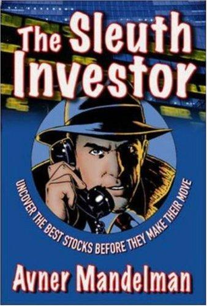

大多数投资者的研究止步于财务报表、年报和新闻稿。阿夫纳·曼德尔曼（Avner Mandelman）认为这远远不够。他在2007年出版的这本书中提出了一套系统化的实地调查方法论，核心主张只有一个：要发现真正被低估的投资机会，你必须像侦探一样深入现场，亲眼观察那些印在纸上的数字所无法揭示的物理证据。
曼德尔曼的背景极为独特。他1947年生于特拉维夫，曾在以色列空军服役并经历了六日战争，之后在以色列理工学院（Technion）获得理学学士学位，又在斯坦福商学院取得MBA。他后来在多伦多创办了投资公司Giraffe Capital Corporation，专注于北美中小型上市公司的深度研究。与此同时，他还是一位获奖作家：短篇小说集《与敌人对话》（Talking to the Enemy）获得美国图书馆协会首届Sophie Brody奖，长篇小说《The Debba》入围加拿大吉勒文学奖长名单并获Arthur Ellis最佳处女小说奖。这种兼具工程师的分析能力、军人的纪律性和小说家的观察力的罕见组合，深刻塑造了他的投资方法。
本书的方法论根基可以追溯到菲利普·费雪（Philip Fisher）。费雪在1958年的经典著作《怎样选择成长股》中首创"scuttlebutt"（闲聊调查法），主张通过与公司员工、客户、供应商、竞争对手广泛交谈来获取财报之外的信息。巴菲特深受费雪影响，曾称自己是"85%的格雷厄姆加15%的费雪"。曼德尔曼则将费雪的方法大幅推进，发展出他所谓的"Scuttlebutt²"——不仅交谈，还要实地勘察，不仅听人说，还要亲眼看到物理证据。
曼德尔曼将实地调查分解为四个维度。第一是"人"（People）：与管理层面谈，与员工闲聊，拜访客户和供应商，甚至在公司附近的餐厅与员工搭话，从多个独立信源交叉验证管理层的说法。第二是"产品"（Product）：亲自检视产品质量，追踪库存和物流动态，试用竞品进行对比。第三是"工厂"（Plant）：实地参观生产设施和办公场所，观察设备状况、产能利用率、仓库存货。第四是"外围"（Periphery）：考察公司所处社区的经济生态，关注周边产业链的景气程度，甚至在停车场数车辆来判断业务活跃度。这四个维度构成一套完整的物理证据搜集框架，使投资者能在财报发布之前就感知到公司基本面的变化。
这本书在专业投资圈内获得了高度评价。知名微型股投资人、MicroCapClub创始人伊恩·卡塞尔（Ian Cassel）称其为"我读过的关于超常规尽职调查的最佳著作"。价值投资网站GuruFocus的书评写道："这毫无疑问是近年来关于投资方法论最好的书之一——我会把它列入有史以来前十名。"Goodreads上的读者评论则指出："这大概是唯一一本真正教你如何在现实世界中分析公司的书，而不是通过财务报表。"
曼德尔曼坦率地承认，他的某些调查技巧游走在边界地带——他会与公司秘书闲谈、跟踪交易撮合者的行踪、建立从客户到供应商再到服务人员的"情报网络"。他在书中特别提醒读者，在采取某些特定的调查手段之前应当咨询律师。这种诚实反而增强了本书的可信度：作者并非在贩卖一套轻松的致富秘诀，而是在呈现真正深入一线所需要的努力、成本与判断力。
对中国读者而言，本书的价值有两层。第一层是实用层面：它提供了一套可操作的实地调研框架，无论你投资的是A股还是美股，观察工厂产能、走访经销商渠道、与一线员工交流这些方法都直接适用。第二层是认知层面：在一个充斥量化模型和远程研究的时代，曼德尔曼提醒我们，最有价值的信息往往存在于物理世界之中——存在于工厂车间的嗡鸣声里，存在于停车场的车辆数量中，存在于一线销售人员不经意的一句抱怨中。真正的信息优势，不来自更快的数据终端，而来自更深的现场投入。